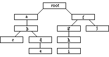
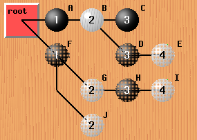

![[SGF FF[4] - Smart Game Format]](images/head.gif) last updated: 1999-12-17
last updated: 1999-12-17
It contains game trees, with all their nodes and properties, and nothing more. Thus the file format reflects the regular internal structure of a tree of property lists. There are no exceptions; if a game needs to store some information on file with the document, a (game-specific) property must be defined for that purpose.
|  |  | This tree is written in pre-order as:
(root(ab(c)(de))(f(ghi)(j)))
SGF example: (;FF[4]C[root](;C[a];C[b](;C[c]) (;C[d];C[e])) (;C[f](;C[g];C[h];C[i]) (;C[j]))) |
| Example for tree structure | Tree as seen by the user. The first line is the main line of play, the other lines are variations. |
There are more examples available.
Node numbering:
When numbering nodes starting with zero is suggested. Nodes should be
numbered in the way they are stored in the file.
Example (of file above): root=0, a=1, b=2, c=3, d=4, e=5, f=6, g=7,
h=8, i=9 and j=10.
SGF uses the US ASCII char-set for all its property identifiers and property values, except SimpleText & Text. For SimpleText & Text the charset is defined using the CA property.
"..." : terminal symbols
[...] : option: occurs at most once
{...} : repetition: any number of times, including zero
(...) : grouping
| : exclusive or
italics: parameter explained at some other place
|
Collection = GameTree { GameTree }
GameTree = "(" Sequence { GameTree } ")"
Sequence = Node { Node }
Node = ";" { Property }
Property = PropIdent PropValue { PropValue }
PropIdent = UcLetter { UcLetter }
PropValue = "[" CValueType "]"
CValueType = (ValueType | Compose)
ValueType = (None | Number | Real | Double | Color | SimpleText |
Text | Point | Move | Stone) |
White space (space, tab, carriage return, line feed, vertical tab and so on)
may appear anywhere between PropValues, Properties, Nodes, Sequences
and GameTrees.
There are two types of property lists: 'list of' and 'elist of'.
'list of': PropValue { PropValue }
'elist of': ((PropValue { PropValue }) | None)
In other words elist is list or "[]".
|
The order of properties in a node is not fixed. It may change every time the file is saved and may vary from application to application. Furthermore applications should not rely on the order of property values. The order of values might change as well.
Everybody is free to define additional, private properties, as long as they do not interfere with the standard properties defined in this document.
Therefore, if one is writing a SGF reader, it is important to skip unknown properties. An application should issue a warning message when skipping unknown or faulty properties.
Only one of each property is allowed per node, e.g. one cannot have two comments in one node:
... ; C[comment1] B [dg] C[comment2] ; ...This is an error.
Each property has a property type. Property types place restrictions on certain properties e.g. in which nodes they are allowed and with which properties they may be combined.
move Properties of this type concentrate on the move made, not on
the position arrived at by this move.
Move properties must not be mixed with setup properties within
the same node.
Note: it's bad style to have move properties in root nodes.
(it isn't forbidden though)
setup Properties of this type concentrate on the current position.
Setup properties must not be mixed with move properties within
a node.
root Root properties may only appear in root nodes. Root nodes are
the first nodes of gametrees, which are direct descendants from a
collection (i.e. not gametrees within other gametrees).
They define some global 'attributes' such as board-size, kind
of game, used file format etc.
game-info
Game-info properties provide some information about the game
played (e.g. who, where, when, what, result, rules, etc.).
These properties are usually stored in root nodes.
When merging a set of games into a single gametree, game infos
are stored at the nodes where a game first becomes distinguishable
from all other games in the tree.
A node containing game-info properties is called a game-info node.
There may be only one game-info node on any path within the tree,
i.e. if some game-info properties occur in one node there may not be
any further game-info properties in following nodes:
a) on the path from the root node to this node.
b) in the subtree below this node.
- no type. These properties have no special types and may appear
anywhere in a collection.
Because of the strict distinction between move and setup properties
nodes could also be divided into two classes: move-nodes and setup-nodes.
This is important for databases, converting to/from ISHI-format and
for some special applications.
inherit Properties having this attribute affect not only the node containing these properties but also ALL subsequent child nodes as well until a new setting is encountered or the setting gets cleared. I.e. once set all children (of this node) inherit the values of the 'inherit' type properties. E.g. VW restricts the view not only of the current node, but of all successors nodes as well. Thus a VW at the beginning of a variation is valid for the whole variation tree. Inheritance stops, if either a new property is encountered and those values are inherited from now on, or the property value gets cleared, typically by an empty value, e.g. VW[].
Property identifier: private properties must not use an identifier used by one of the standard properties. You have to use a new identifier instead. The identifier should consist of up to two uppercase letters. SGF doesn't require to limit the identifier to two letters, but some applications could break otherwise.
Property value: private properties may use one of the value types defined in this document or define their own value type. When using a private value type the application has to escape every "]" with a leading "\". Otherwise the file would become unparseable. Should the value type be a combination of two simpler types then it's suggested that your application uses the Compose type.
UcLetter = "A".."Z"
Digit = "0".."9"
None = ""
Number = [("+"|"-")] Digit { Digit }
Real = Number ["." Digit { Digit }]
Double = ("1" | "2")
Color = ("B" | "W")
SimpleText = { any character (handling see below) }
Text = { any character (handling see below) }
Point = game-specific
Move = game-specific
Stone = game-specific
Compose = ValueType ":" ValueType
|
Formatting:
Soft line break: linebreaks preceded by a "\"
(soft linebreaks are converted to "", i.e. they are removed)
Hard line breaks: any other linebreaks encountered
Attention:
a single linebreak is represented differently on different systems, e.g.
"LFCR" for DOS, "LF" on Unix.
An application should be able to deal with following linebreaks:
LF, CR, LFCR, CRLF.
Applications must be able to handle Texts of any size. The text should be displayed the way it is, though long lines may be word-wrapped, if they don't fit the display.
Escaping: "\" is the escape character. Any char following "\" is inserted verbatim (exception: whitespaces still have to be converted to space!). Following chars have to be escaped, when used in Text: "]", "\" and ":" (only if used in compose data type).
C[Meijin NR: yeah, k4 is won\ derful sweat NR: thank you! :\) dada NR: yup. I like this move too. It's a move only to be expected from a pro. I really like it :) jansteen 4d: Can anyone\ explain [me\] k4?]could be rendered as:
Meijin NR: yeah, k4 is wonderful sweat NR: thank you! :) dada NR: yup. I like this move too. It's a move only to be expected from a pro. I really like it :) jansteen 4d: Can anyone explain [me] k4?
Formatting: linebreaks preceded by a "\" are converted to "", i.e. they are removed (same as Text type). All other linebreaks are converted to space (no newline on display!!).
Escaping (same as Text type): "\" is the escape character. Any char following "\" is inserted verbatim (exception: whitespaces still have to be converted to space!). Following chars have to be escaped, when used in SimpleText: "]", "\" and ":" (only if used in compose data type).
Definition: List of point: list of (point | composition of point ":" point) For the composed type the first point specifies the upper left corner, the second point the lower right corner of the rectangle. 1x1 Rectangles are illegal - they've to be listed as single point.The definition of 'point list' allows both single point [xy] and rectangle [ul:lr] specifiers in any order and combination. However the points have to be unique, i.e. overlap and duplication are forbidden.
To get an idea have a look at an example.